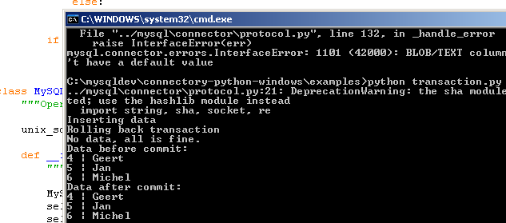

I didn’t test MySQL Connector/Python on a Microsoft Windows machine, but after somebody did and filed a bug report, I couldn’t resist launching VirtualBox.
Fixing the problem with socket.MSG_WAITALL not being available on Windows wasn’t much work. However, adding support for MySQL’s Named Pipe on Windows seems to be a bigger challenge.
I couldn’t find docs for win32api anymore on Python’s doc website for win32api, which is referenced everywhere, so I guess somebody needs to give a hint or write a patch.
For now, Windows users of Connector/Python should use TCP to connect to MySQL.
]